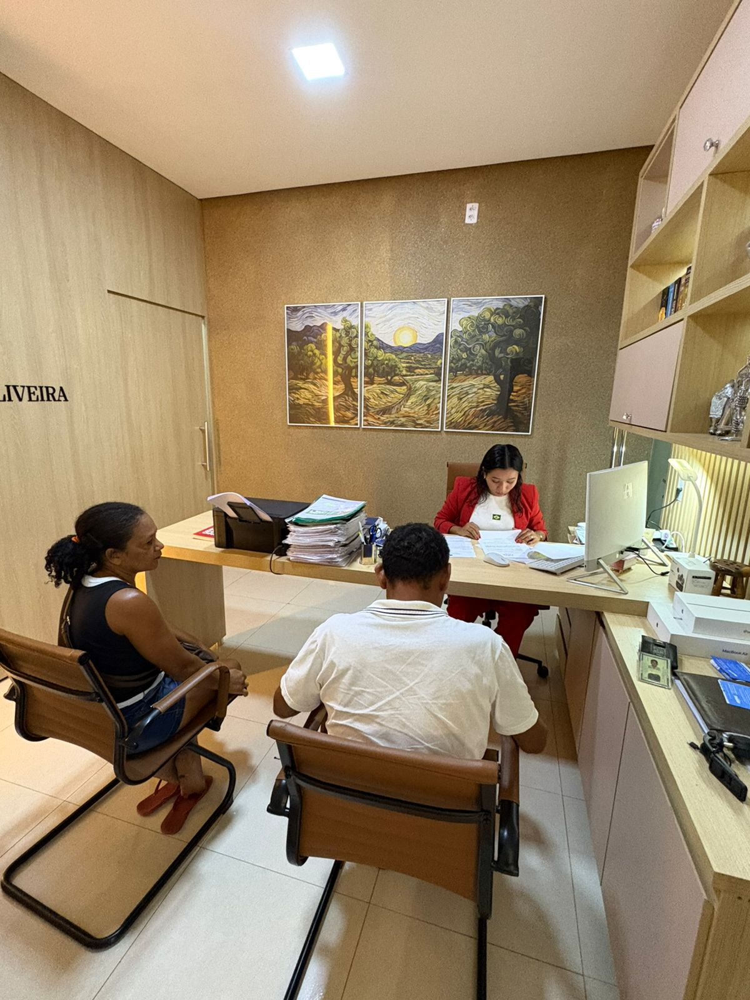

Nossa trajetória
Mais de uma décadas de história
De um pequeno escritório fundado em 2012 a uma das bancas jurídicas mais respeitadas do estado.

O início
Uma vocação que se tornou legado.
O escritório foi fundado pelo Dra. Joseane Oliveira em 12 de março de 2012, no quintal da sua casa. Movido pela convicção de que advocacia se faz com técnica, ética e compromissso com as pessoas, construiu uma reputação sólida ao longo do tempo.
Hoje, somos uma equipe de mais de 25 profissionais atendendo clientes em todos as regiões, mantendo o mesmo cuidado em cada detalhe.
Linha do tempo
Momentos que nos definem
Fundação
Dra. Joseane Oliveira abre o escritório na sua propria residência.
Expansão
Criação dos departamentos especializados em Civil, Previdência e Trabalhista.
Nova sede
Mudança para o atual escritório na Rua Frei Alberto, Localizado no bairro vilinha, Grajaú-MA.
Reconhecimento
Somos uns dos maiores escritório da região com grande recolhecimento.
Transformação digital
Implantação de plataforma própria para acompanhamento processual e atendimento remoto.
Nossos valores
O que nos move
Ética
Conduta íntegra em cada decisão profissional.
Estratégia
Análise profunda antes de cada movimento jurídico.
Empatia
Entender o cliente é o primeiro passo para defendê-lo.